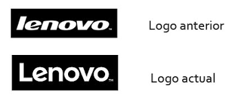
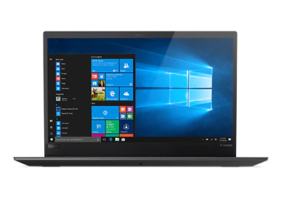
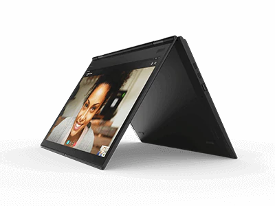
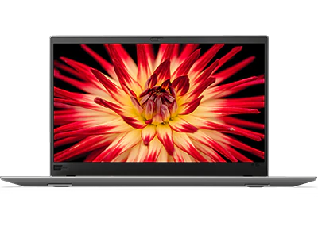

LENOVO
Lenovo Group, es una compañía multinacional de tecnología china, fabricante de productos
electrónicos, ordenadores, tabletas y smartphones. Lenovo es un acrónimo de "Le" (seudoapócope
de "leyenda") y "novo" (seudolatín para "nuevo"), es decir, "Nueva Leyenda".
La compañía produce teléfonos inteligentes, PCs, servidores, computadoras portátiles, PDAs, tabletas,
netbooks, periféricos, impresoras, televisores, escáneres de computadora, memorias, auriculares y manos
libres para teléfonos móviles. También provee tecnología de información de integración y servicios de
soporte, y su unidad QDI ofrece contratos de manufactura. La compañía también ofrece acceso a Internet
a través de su portal FM365.com.
Su centro principal se encuentra en Pekín, China. Además, cuenta con una sede en Morrisville, Carolina
del Norte, Estados Unidos; el hogar del grupo ThinkPad anteriormente perteneciente a IBM. Sus acciones
se cotizan el la Bolsa de Hong Kong.
Actualmente, el 39,6% de Lenovo es propiedad de socios públicos, el 42,4% de Legend Holdings, Limited,
el 7,9% de IBM y el 10,1% de Texas Pacific Group, General Atlantic y Newbridge Capital LLC. Debido a que
la Academia China de las Ciencias, una agencia del gobierno de China, posee el 65% de Legend Holdings,
efectivamente el gobierno de ese país posee el 27,5% de Lenovo y es por ende el socio mayoritario.
Historia

Liu Chuanzhi fundó Lenovo el 1 de noviembre de 1984 con un grupo de diez ingenieros en Pekín con 200.000 yuanes.
El gobierno chino aprobó la incorporación de Lenovo el mismo día, uno de los fundadores de Lenovo, indica que
la primera reunión en preparación para comenzar la empresa se celebró el 17 de octubre del mismo año. Once
personas, la totalidad del personal inicial, asistieron. Cada uno de los fundadores era un miembro de mediana
edad del Instituto de Tecnología Informática adscrito a la Academia de Ciencias de China. Los 200.000 yuanes
utilizados como capital inicial fueron aprobados por Zēng Màocháo (曾 茂 朝). El nombre de la empresa acordada
en esta reunión fue la Compañía de Desarrollo de Nuevas Tecnologías de la Academia de Ciencias de la Academia
China de Ciencia.
Su primer esfuerzo importante, un intento de importar televisores, falló. El grupo se reconstruyó dentro de un
año al realizar controles de calidad en computadoras para nuevos compradores. Lenovo pronto comenzó a desarrollar
una placa de circuito que permitiera a las computadoras personales compatibles con IBM procesar caracteres
chinos. Este producto fue el primer gran éxito de Lenovo. Lenovo también intentó y no comercializó un reloj
digital. Liu dijo: «Nuestro equipo de administración a menudo difería en qué camino comercial viajar. Esto
condujo a grandes discusiones, especialmente entre el jefe de ingeniería y yo. Sintió que si la calidad del
producto era buena, entonces se vendería solo. Sabía que esto no era cierto, que el marketing y otros factores
eran parte del éxito final de un producto». El hecho de que su personal tuviera poca experiencia comercial
agravó las dificultades iniciales de Lenovo, «Éramos principalmente científicos y no entendíamos el mercado»,
dijo Liu. «Acabamos de aprender por prueba y error, lo cual fue muy interesante, pero también muy peligroso»,
dijo Liu. En 1990, Lenovo comenzó a fabricar y comercializar computadoras usando su propia marca.
En mayo de 1988, Lenovo colocó su primer anuncio de contratación. El anuncio fue colocado en la página principal
de China Youth News. Tales avisos eran bastante raros en ese China entonces. De los 500 encuestados, 280 fueron
seleccionados para tomar un examen escrito de empleo. 120 de estos candidatos fueron entrevistados en persona.
Aunque inicialmente los entrevistadores solo tenían autoridad para contratar a 16 personas, 58 recibieron
ofertas. El nuevo personal incluyó a 18 personas con títulos de posgrado, 37 con títulos de pregrado y tres
estudiantes sin educación de nivel universitario. Su edad promedio era de 26. Yang Yuanqing, el actual director
ejecutivo de Lenovo, estaba entre ese grupo.
Tipos de Lenovo
ThinkPad X1 Extreme (15.6”, Intel)

| ThinkPad X1 Extreme (15.6”, Intel) |
|
Caracteristicas |
| Procesador |
Procesadores hasta Intel® Core™ i7 de 8va generación con tecnología vPro™ |
| Sistema operativo |
Hasta Windows 10 Pro |
| Memoria Estandar |
Hasta 16GB (8+8) DDR4 2666MHz SoDIMM |
| Bateria |
Hasta 15 horas de duración* (batería integrada 80Whr con RapidCharge) |
ThinkPad X1 Yoga 3era Gen (14", Intel)

| ThinkPad X1 Yoga 3era Gen (14", Intel) |
|
Caracteristicas |
| Procesador |
Procesadores hasta Intel® Core™ i7 de 8va generación opcional vPro™ |
| Sistema operativo |
Hasta Windows 10 Pro 64 bits |
| Memoria Estandar |
Hasta 16 GB LPDDR3 2133MHz soldado |
| Memoria |
Hasta 15.4 horas de duración* |
ThinkPad X1 Carbon 6ta Gen (14", Intel)

| ThinkPad X1 Carbon 6ta Gen (14", Intel) |
|
Caracteristicas |
| Procesador |
Procesadores hasta Intel® Core™ i7 de 8va generación opcional vPro |
| Sistema operativo |
Windows 10 Pro 64 bits |
| Memoria Estandar |
Hasta 16.0GB PC3-17064 LPDDR3 Soldado 2133MHz |
| Memoria |
Hasta 19.3 horas de duración |